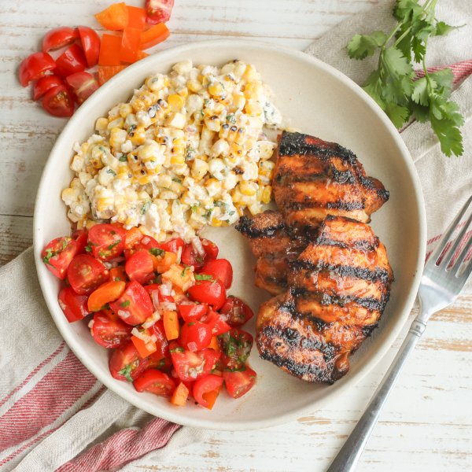

Spicy Grilled Chicken with Tomato-Cilantro Salsa & Mexican Corn Salad

Total Time
35 min
Nutrition (Per Serving)
685.2 kcalCalories
58 gProtein
43.9 gCarbs
32.9 gFat
Full nutrition table
| Calories | 685.2 kcal |
| Total fat | 32.9 g |
| Saturated fat | 9.5 g |
| Trans fat | 0.4 g |
| Cholesterol | 246.7 mg |
| Sodium | 845.4 mg |
| Carbohydrates | 43.9 g |
| Fiber | 5.5 g |
| Sugars | 24.2 g |
| Protein | 58 g |
| Potassium | 1457.9 mg |
| Calcium | 236.7 mg |
| Iron | 4.3 mg |
| Vitamin A | 1679 IU |
| Vitamin C | 102.9 mg |
| Vitamin D | 8.2 IU |
Cookware
Ingredients
- 2 lbchicken thighs, boneless skinless
- 1 small bunchcilantro
- 4 earscorn
- 1 (4 oz) pkgcrumbled feta cheese
- 2 pintsgrape tomatoes
- 2limes
- 1orange bell pepper
- ½ cupplain Greek yogurt
- ½ mediumred onion
- black pepper
- chili powder
- cumin, ground
- extra virgin olive oil
- garlic powder
- honey
- hot sauce
- mayonnaise
- salt
Steps
- Place hot sauce, oil, honey, and spices in a medium bowl. Stir to combine the marinade.3 tbsp hot sauce
2 tbsp extra virgin olive oil
2 tbsp honey
2 tsp garlic powder
1 tsp cumin, ground
1 tsp salt
½ tsp black pepper - Add chicken to the bowl with the marinade, stir to coat, and set aside.2 lb chicken thighs, boneless skinless
- Preheat a grill pan, outdoor grill, or skillet over medium-high heat.
- While the pan heats up, remove husks and silks from corn. Using your hands, snap each ear in half.4 ears corn
- Once the pan is hot, add corn cobs and grill, rotating occasionally, until slightly charred, 4-5 minutes. Remove to a plate and allow to cool slightly. (Reserve pan for later use.)
- Meanwhile, wash and dry the fresh produce.2 limes
1 small bunch cilantro
2 pints grape tomatoes
1 orange bell pepper - Zest and juice limes into another medium bowl.
- Shave cilantro leaves off the stems; discard stems and mince the leaves. Add to the bowl with the lime.
- Peel, halve, and mince onion. Add to the bowl, along with the spices, and stir to combine the lime dressing. Transfer half of the dressing to a third medium bowl, then set both bowls aside.½ medium red onion
1 tsp chili powder
½ tsp salt
¼ tsp black pepper - Return the grill pan to medium-high heat. Once the pan is hot, add chicken and grill until charred and cooked through, 3-4 minutes per side. Once done, add to the plate with the corn.
- Meanwhile, quarter tomatoes. Trim, seed, and medium dice bell pepper. Add both to one of the bowls with the dressing, stir to combine the salsa, and set aside.
- Working over the bowl with the remaining lime dressing, coarsely grate corn off of the cob, catching all of the kernels and juices in the bowl.
- Add feta, yogurt, and mayo to the bowl with the corn. Stir to combine the corn salad.1 (4 oz) pkg crumbled feta cheese
½ cup plain Greek yogurt
3 tbsp mayonnaise - To serve, divide chicken, corn salad, and tomato salsa between plates. Enjoy!